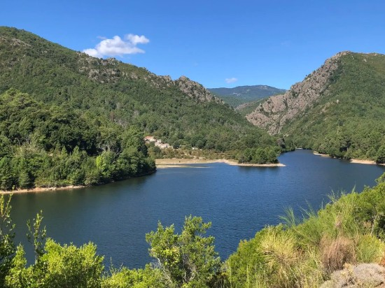

A meredek hegyoldalak és rideg sziklafalak között megbúvó Lac de Sampolo kiváló példája annak, amikor egy alapvetően mérnöki, ember alkotta műtárgy az évtizedek során olyan tökéletesen integrálódik a környezetébe, mintha mindig is a sziget organikus része lett volna. A tározót tápláló Fium'Orbu folyó vize a gát mögött felduzzadva, a napfény és a meder geológiai összetételének köszönhetően egészen valószerűtlen, mély smaragdzöld árnyalatot vesz fel. Ez a vibráló, tiszta szín éles vizuális kontrasztot alkot a part menti szürke gránitsziklákkal és a völgyet borító buja, sötétzöld növényzettel, a kanyargós szerpentinek közül hirtelen feltáruló víztükör pedig egy csapásra megmutatja Korzika belső vidékének egy lágyabb, megnyugtatóbb arcát.
Bár a tó a nyugalom szimbóluma, a mögötte meghúzódó hegyvidéki hidrológia folyamatos és dinamikus változást diktál, amely közvetlenül befolyásolja a táj jellegét. Hevesebb esőzések vagy a tavaszi hóolvadás után a folyó hordaléka gyorsan átrajzolhatja a meder finom tónusait, a smaragd tisztaságot átmenetileg egy vadvízi, sűrűbb karakterre cserélve. Az út mentén húzódó, szűkös, ám stratégiailag kiválóan elhelyezett kilátópontok egyedi ritmust adnak az utazásnak: lehetőséget biztosítanak egyfajta dekompressziós megállóra, ahol a vízfelszín mozdulatlansága és a környező csúcsok vadsága közötti sajátos egyensúly segít a vándornak belsőleg is ráhangolódni a sziget szívére.
Kultúrtörténeti és földrajzi szempontból a Lac de Sampolo egyértelműen a beavatás helyszíne, hiszen közvetlenül a tó szomszédságában kezdődik Korzika egyik legfélelmetesebb és legszűkebb szurdokrendszere, a Défilé de l'Inzecca. Ezen a ponton a völgy drámai módon beszűkül, a monumentális zöldes sziklafalak szinte egymáshoz hajolnak, bezárva a teret, miközben a folyó mélyen a sziklák alá szorulva zúg. A Sampolo-tó így nem egy egyszerű végállomás, hanem az az utolsó tágas horizont, az a megnyugtató, mély levegővétel, amelyet az ember önkéntelenül is magához vesz, mielőtt a vad és könyörtelen kanyon végleg elnyelné.